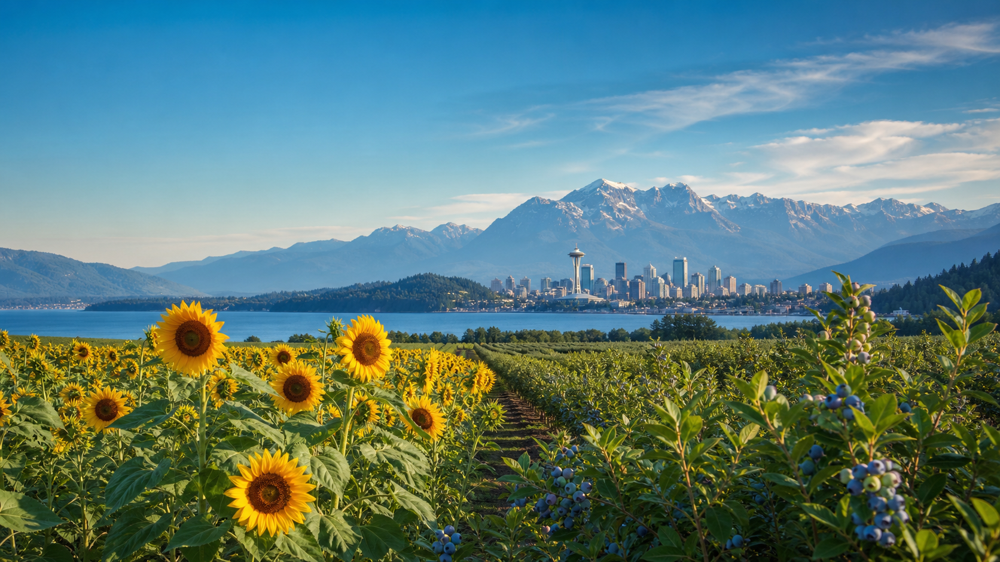

Saturday · Arrival
Land softly
Unpack, let everyone reset, and keep dinner flexible at home. No ticketed plan on travel day.
Afternoon / evening

Late summer · 2026
Fair rides, farm country, pop culture, manga, mountain air, and enough space to enjoy each day.
See the planRecommended shape
Sunday centers on the State Fair. Monday and Tuesday are highlighted as a flexible pair and stay swappable until the mountain forecast and smoke picture are clear.
Saturday · Arrival
Unpack, let everyone reset, and keep dinner flexible at home. No ticketed plan on travel day.
Afternoon / evening
Sunday · Fixed
Animals and barns first, an early fair lunch, then rides and exhibits while the group still has energy.
10:30 a.m.–4 p.m.
Monday · Default
MOPOP, Pike Place, the Monorail, and an anime-and-manga finish in the International District.
9 a.m.–5:30 p.m.
Tuesday · Default
A repeat favorite with river walking, three waterfall viewpoints, and a Middle Falls turnaround.
8 a.m.–1:30 p.m.
Sunday, August 30
The broadest mixed-age choice: animals and sensory fun for Aria, rides and competition for the older kids, and a real local fair day for everyone.
Start with the barns and animals, eat before the lunch rush, then let the older kids choose rides while adults rotate through Aria’s quieter reset.
Leave KirklandAllow time for fair traffic, parking, and the walk to the gate.
Barns & animalsDo Aria’s highest-value block while the grounds are cooler.
Early fair lunchEat before the main rush and refill water.
Rides + Aria resetAdults rotate; use the compact stroller, carrier, and hearing protection.
Group favoritesPick the best remaining exhibits, races, rides, or fair food.
Head homeLeave before the day turns into a bedtime problem.
Sunflower maze alternative
A distinct Duvall farm option with a large sunflower maze, open Sunday into the evening. It is the best alternative if the group wants sunflowers but would rather preserve a real midday nap and go after lunch or toward golden hour.
Activity-heavy farm alternative
More built-in play than Mountainview—hayride, slides, playground, sand pit, and corn crib—at the lowest ticket price. Choose it when the kids want farm activities without committing to the scale and noise of the fair.
Monday, August 31 · Default
Park once at Seattle Center, travel south by Monorail and Link, then reverse the same transit spine to retrieve the car.
Paid anchor · 2 hours
Indie games, fantasy, science fiction, music, costumes, and hands-on Sound Lab. Single strollers under 30 inches are permitted; bring the compact stroller, not a wagon.
Reset
Use the Armory for broad food choices, restrooms, and a clean transition before the Monorail. Start the stroller nap here.
Optional Seattle classic · up to 75 minutes
Ride the Monorail to Westlake, then walk to the Market. Keep it focused: fish throw, main arcade, MarketFront view, and one snack. Skip this stop if the stroller nap is not working.
Anime highlight · 90 minutes
Manga, anime and game art books, figures, Studio Ghibli goods, K-pop, Japanese stationery, plush, snacks, and desserts—plus Pink Gorilla two blocks away if energy holds.
Return
Ride from the International District to Westlake, take the Monorail to Seattle Center, and aim to be driving home by 5.
Tuesday, September 1 · Default
Wallace Falls is the repeat favorite: closer, less strenuous, and still substantial enough to feel like a real visitor hike.
A repeat 5/5 family favorite with river walking, a steady but manageable climb, and three waterfall viewpoints.
Leave KirklandPack breakfast, water, and the Discover Pass.
TrailheadStart before the weekend lot fills.
Middle FallsBest group viewpoint and planned turnaround.
Picnic / descendUse the river and picnic areas for a reset.
Back to carsCar nap on the drive home if Aria needs it.
Home & resetOpen afternoon before the final evening.
The official Sunday–Tuesday forecast is not fully in range yet. Choose the weekday order after checking mountain weather, AQI/smoke, WSDOT incidents, and the newest trail report. Poor AQI means no mountain hike with Aria.
Short waterfall backup
A recent family repeat with a strong waterfall payoff in a short package. The lower viewpoint remains closed, but the upper viewpoint is open and was the part you enjoyed on the last visit.
Flat river backup
A repeat you rated awesome: mostly gentle river walking, a historic lime kiln, and a natural picnic point. It is longer on paper but comparatively gentle because the route is relatively flat.
Before the visit
Choose how many ride wristbands to buy; entry, one car, and three onsite wristbands would be about $280 before food.
Choose which weekday gets Wallace Falls; keep Seattle on the other day.
Confirm the two-car plan and any booster-seat needs for the 10-year-old.
Decide whether MOPOP is worth the group ticket cost or use the free city version.
Sunday gets the biggest mixed-age outing; the two weekdays follow the air and weather.